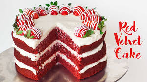

Red Velvet Cake

| prep time |
cooking time |
total time |
| 15 mins |
25 mins |
40 mins |
The most incredible Red Velvet Cake with Cream Cheese Frosting is fluffy, soft, buttery and moist with the most perfect velvet texture! Super easy to make with a few tips and tricks for the best results! You will go crazy for a second slice!
Ingredients
- 1/2 cup (120g) unsalted butter, at room temperature
- 1 1/2 cups (300g) caster sugar (or fine white granulated sugar)
- 2 large eggs
- 1/4 cup cooking oil
- 1 tablespoon (10g) unsweetened cocoa powder plus 1 tablespoon extra for dusting
- 2 1/2 tablespoons (45ml) red food colouring (liquid, not gel)
- 2 teaspoons (10ml) pure vanilla extract
- 1 tablespoon (20ml) white vinegar
- 2 1/2 cups (350g) plain cake flour, sifted (or all purpose/plain flour)
- 1 teaspoon baking soda (bi-carb soda)
- 1 teaspoon salt
- 1 cup (250ml) buttermilk*
- Cream Cheese Frosting:
- 14 ounces (400g) cream cheese (not spreadable), at room temperature
- 1/2 cup (120g) unsalted butter, at room temperature
- 2 teaspoons pure vanilla extract
- 4 cups confectioners (or icing) sugar
- 1 tablespoon lemon juice (optional -- adds subtle hint of lemon)
Instructions
For Cake:
- Heat oven to 350°F | 175°C. Lightly grease two 8-inch cake pans with butter or nonstick oil spray and lightly dust with 1 tablespoon of the sifted cocoa powder.
- Cream butter and sugar together until light in colour. Add eggs one at a time, beating well after each addition to combine well.
- In a smaller bowl, mix together oil, remaining cocoa powder, red food colouring and vanilla until smooth. Stir colour mixture and vinegar through the creamed sugar mixture to combine.
- Sift together flour, baking soda and salt in a separate bowl. Add half of the dry ingredients and half of the buttermilk to the wet ingredients; mix well. Repeat with remaining dry ingredients and buttermilk.
- Divide batter among the 2 prepared pans and bake for about 25 to 30 minutes, or until a toothpick inserted into the centre of the cake comes out clean. Cool on a wire rack completely.
For Cream Cheese Frosting:
- Beat together cream cheese, butter and vanilla until smooth lighter in colour (about 3-4 minutes). Beat in icing sugar until frosting is light and fluffy (if frosting is too thin, add more icing sugar and beat again until reaching your desired consistency).
Optional if using: mix in the lemon juice
Recipe Notes
- Transfer 1 cake onto a serving dish/plate, flat-side down. Trim the top dome off of the cake to create a flat bottom later. Scoop about 1 1/2 - 2 cups of frosting onto cake and spread evenly over the top.
- Place second cake layer on top and use remaining frosting to cover top and sides of cake
- Crumble trimmed pieces of cake to decorate.
Enjoy!
*To make your own buttermilk, mix 1 cup of full cream milk with 1 teaspoon vinegar before baking. Allow the milk to sour for 5-10 minutes.
Adapted from The New York Times
| Nutrition Facts |
|
| Red Velvet Cake |
| Amount Per Serving |
| calories 607 |
calories from fat 261 |
| |
% Daily value* |
| |
% Daily Value* |
| total fat 29g |
45% |
| saturated fat 19g |
75% |
| choloesterol 110mg |
37% |
| sodium 128mg |
5% |
| potassium 129mg |
4% |
| total Carbohydrates 72g |
24% |
| Dietary Fiber 1g |
4% |
| Sugars |
66g |
| protein 7g |
14% |
| Vitamin A |
19.9% |
| Vitamin c |
0.6% |
| Calcium |
7% |
| Iron |
3.9% |
* Percent Daily Values are based on a 2000 calorie diet.